(p1)
(p1)
Alan Hensel has taken the trouble of compiling an extensive glossary, which he has included as an ascii text file in his Life pattern archive. This glossary is extracted here for your convenience. Technical revisions suggested by Achim Flammenkamp and Al Hensel were added to this version on 7-Nov-95.
In-line images of patterns have now been added to this glossary. Each picture is linked to a text file that can be downloaded and run in a Life implementation. If you are using a text-only browser, you may prefer to view the original text-only glossary.
This glossary was compiled by Al Hensel, with indispensable help from John Conway, Dean Hickerson, David Bell, Bill Gosper, Bob Wainwright, Noam Elkies, Nathan Thompson, Harold McIntosh, and Dan Hoey.
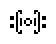 (p5)
A for All
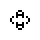 (p6)
acorn
agar - any pattern that can periodically tile the Life universe, either as a still life or as an oscillator.
aircraft carrier
airforce
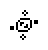 (p7)
ants
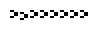 (p5 wick)
aVerage
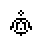 (p5)
b-heptomino
b-heptomino shuttle, p46 shuttle, twin bees shuttle
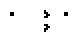 (p46)
B track - a type of Life object in which one or more b-heptominos are perturbed by oscillators so as to travel in a loop.
babbling brook - an oscillator whose rotor forms a chain, with each cell adjacent only to its 1 or 2 neighbors in the chain.
bakery - 4 loaves:
barber pole - a section of an oscillator or spaceship in which each generation of the section looks the same, except for a sideways shift.
barberpole - any length extension of this p2 oscillator:
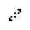 (p2)
barge
beacon
beehive
beehive and dock, beehive on big table
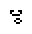 (p1)
beehive with tail
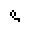 (p1)
bi-loaf, half bakery, loaf on loaf
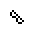 (p1)
biblock
big S, S-spiral
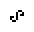 (p1)
billiard table - any oscillator that is built inside a stable border. Examples: hertz oscillator, pressure cooker, hustler.
bipole, short barberpole - this length of the barberpole:
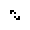 (p2)
blinker
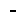 (p2)
blinker ship - an object which travels while growing larger by leaving an increasing trail of blinkers, but which leaves no permanent exhaust. Example:
block
block and dock, block on big table
(p1)
block on table
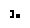 (p1)
blocker
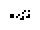 (p8)
boat
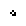 (p1)
boat-bit - a memory device in which a bit of information is represented as the presence or absence of a boat adjacent to a snake (or eater or beacon or ...)
boat on boat, boat-tie, bow tie, bi-boat
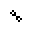 (p1)
bookends
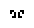 (p1)
boss
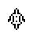 (p4)
brain
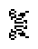 (c/3)
breeder - 1: any pattern that grows quadratically by creating multiple copies of a second object, each of which creates multiple copies of a third object. 2: Bill Gosper's original breeder.
bunnies
burloaferimeter
butterfly effect, sensitive dependence on initial conditions - the idea that just a small change in initial conditions, such as a butterfly flapping its wings halfway around the world, can create a large difference in outcomes, such as next month's weather.
caber tosser - a gun of variable period created by bouncing a glider off of a receding spaceship. See life pattern CORDTOSS.
caterer
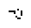 (p3)
cell - the fundamental spatial unit operated on by the rules of a cellular automaton during one generation.
cellular automaton - a simulated universe (such as Conway's Game of Life) in which every point's state depends on the states of nearby neighbors at an earlier generation.
census - an accounting of the types of patterns that a larger pattern consists of.
centinal
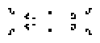 (p100)
chemist
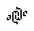 (p5)
Cheshire cat - this famous pattern has been intentionally omitted because it is stupid and everybody hates it.
cis-mirrored R-bee
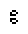 (p1)
cis-boat with tail, down boat with tail
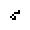 (p1)
clock
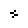 (p2)
cloverleaf, Achim's p4
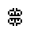 (p4)
confused eaters
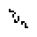 (p4)
Conway's Game of Life - a classic game invented by the British mathematician John Horton Conway in 1970. It is one of the simplest cellular automata simulations ever invented, but its richness is surprising. The rules are as follows: - The game is played on a 2-dimensional grid. Each square, or "cell", is binary (either "on" or "off"). - If a cell is off and has 3 neighbors (out of 8), it will become alive in the next clock tick. - If a cell is on and has 2 or 3 neighbors, it survives; otherwise, it dies on the next clock tick.
Cordership - a c/12 diagonally moving spaceship constructed from switch engines.
cross
dart
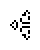 (c/3)
dead spark coil, JC
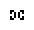 (p1)
diamond ring
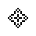 (p3)
domino spark - a 2-bit spark, orthogonally connected, such as the one on the heavyweight spaceship.
double wing, moose antlers
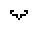 (p1)
eater - any still life that can repair itself from some attacks.
eater, fishhook - this eater, which eats gliders and fish:
elevener, intentionless
 (p1)
(p1)
familiar fours - sets of four equal things that tend to crop up. Examples: traffic lights, honeyfarm, blockade, fleet, bakery.
father pattern - any pattern that precedes a given pattern by exactly 1 generation.
fencepost - anything used to stabilize the end of a wick.
figure 8, big beacon
fleet - 4 ships:
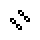 (p1)
flip-flop - any period 2 oscillator, esp. those whose second generation is a mirror image of the first.
flipper - any oscillator or spaceship that forms its mirror image at half its period.
flotilla - a group of spaceships, some of which are being supported.
fourteener, 14-ner
fumarole
fuse - a way for a wick to burn from one end.
garden of eden, GOE - a pattern that has no father pattern.
generation - the smallest fundamental unit of time, during which the rules of a cellular automaton are applied once.
glider
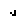 (c/4)
glider gun - any pattern that grows forever by emitting gliders.
Gosper gun, original glider gun
gourmet
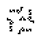 (p32)
grammar - a set of rules used to describe an infinite number of ways that one can connect a set of parts to build one large oscillator, still-life, or spaceship.
grandfather pattern - any pattern that can precede a given pattern by exactly 2 generations.
gray counter
great on-off
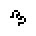 (p2)
gun - any pattern that grows forever by emitting spaceships.
HashLife - a Life algorithm that achieves remarkable speed by storing sub-patterns in a hash table, and using them to skip forward, sometimes thousands of generations at a time. HashLife takes tremendous amounts of memory and can't show patterns at every step, but can quickly calculate the outcome of a pattern that takes millions of generations to complete.
hassler - an oscillator that can alternately change a properly placed object, and then change it back.
hat
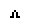 (p1)
heavyweight emulator
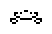 (p4)
heavyweight spaceship, HWSS, big fish
heavyweight volcano
 (p5)
(p5)
Heisenburp device - a Life object which can detect the passage of a glider without affecting the glider's path or timing.
Hertz oscillator
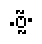 (p8)
hexlife - an alternative game similar to Conway's, which is played on a hexagonal grid. No set of rules has yet emerged as uniquely interesting.
HighLife - an alternate set of rules similar to Conway's, but with the additional rule that 6 neighbors generates a birth. Most of the interest in this variant is due to the replicator that evolves from:
honeyfarm - 4 beehives:
hustler
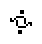 (p3)
induction coil - any pattern used to stabilize a border. Example:
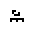 (p1)
inductor - an oscillator of one or two-way orthogonal symmetry which depends on mutual symmetry to exist. Examples: pulsar, tumbler.
integral sign
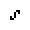 (p1)
jam
keys
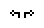 (p3)
kickback reaction
Kok's galaxy
light bulb
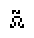 (p2)
lightspeed wire - a wick that can burn non-destructively at the speed of light, which might be useful for sending a signal or constructing oscillators with periods not currently attainable. Unfortunately, no way has been found to return a signal to its starting point, either by reflecting it or bending it around a corner. Example:
lightweight emulator
lightweight spaceship, LWSS, small fish
 (c/2)
(c/2)
line puffer - a puffer whose output comes from a long row of cells generated orthogonal to the direction of motion of the puffer. Some types of line puffers appear to be extensible and have arbitrarily large periods, but this has not been proven.
loaf
long barge
long boat
long ship
loop
lumps of muck, LoM, blockade - 4 blocks:
mango, dove, cigar
mazing
methuselah - any small "seed" pattern that does not stabilize for a very long time. Not used to describe objects that are known to grow forever. Originally defined as a pattern having a population of at most 10 and a Life-span of at least 100. Examples: acorn, bunnies, rabbits.
middleweight emulator
middleweight spaceship, MWSS, medium fish
middleweight volcano
MIT oscillator, cuphook
mold
monogram, JHC
negentropy
octagon II
Orion
oscillator - any pattern that reappears in the same position after a certain number of generations.
paperclip, drain trap
pedestle
 (p5)
(p5)
penny lane
pentadecathlon, PD
period - the number of generations it takes for an oscillator to repeat, or a spaceship to be displaced exactly. Often the notation pN is used, for example, p2 for period 2. Also, pN/m when symmetry is involved, where m is the number of translations, for example, p6/2 describes a period 6 flipper.
phoenix - any pattern whose cells all die in every generation, and yet lives forever. Example:
pi heptomino
pond
pond on pond, bi-pond
population - the number of live ("on") cells of an object.
predecessor - any pattern that can precede a given pattern by any number of generations.
pressure cooker
pseudo-barberpole
puffer, puffer train - any pattern that moves, leaving a trail.
pulsar, CP-pulsar, pulsar CP 48-56-72
pushalong - a tagalong on the front end of a spaceship. Example:
pyrotechneczum
quad, barberpole intersection
quapole, quadpole, barberpole of length 4 - this length of the barberpole:
queen bee
queen bee shuttle, p30 shuttle
r-pentomino
R2D2
rabbits
rake - any puffer that leaves a trail of spaceships.
relay - an oscillator in which gliders or spaceships travel in a loop.
rephaser
replicator - a Life object which repeatedly forms copies of itself. Such things are known to be possible in Life, but no example is known. But in the HighLife variant, there is a simple replicator.
revolver
roteightor
rotor - the active cells in an oscillator.
sawtooth - a pattern whose population is unbounded, but doesn't tend uniformly to infinity. The population returns to its minimum value at intervals, producing a zig-zag graph. Schick engine
scorpion
scrubber
search program - a program which can find certain interesting Life objects much more quickly than a person can manually. Search programs have found new oscillators, spaceships, and collisions.
shillelagh
ship
ship on boat, boat-ship-tie
shiptie, ship on ship, bi-ship, half fleet
shuttle, piston - any oscillator in which some part moves back and forth. Examples: queen bee shuttle, b-heptomino shuttle.
siesta
sinking ship
skewed quad
smiley
snacker
snake
snake pit
sombreros
space dust - a section of an oscillator or spaceship which is composed of an almost random mixture of live and dead cells. Such objects are very hard to construct.
spacefiller - any pattern that grows quadratically by filling space with still life. spaceship - any pattern that moves, leaving no trail.
spark - any piece of an oscillator or spaceship which dies out, without further interacting with the oscillator or spaceship that created it, but can interact with other objects before dying.
spark coil, grapser
Sparky
speed of light, light speed, c - traveling at one cell per generation. Slower speeds are usually written as fractions of c.
spiral
star
stator - the unchanging cells in an oscillator.
still life - oscillators of period 1; stable patterns.
stretcher - any pattern that grows by stretching a wick or agar.
switch engine:
synthesis, glider synthesis - method of generating a pattern using gliders only.
table on table, ][, pair of tables
tagalong - a dependent part of a spaceship that can be removed without destroying the spaceship.
technician finished product
ternary reaction - a reaction in which 2 gliders on one path and 1 glider on a perpendicular path destroy each other. This is commonly used to double the period of a glider gun.
test tube baby
toad
toadsucker - a hassler that sucks a toad. Example:
toaster, lightweight volcano
traffic circle
traffic jam - a traffic light hassler. Example: traffic circle.
traffic lights - 4 blinkers:
trans-boat with tail, up boat with tail
trice tongs
tripole, short barberpole - this length of the barberpole:
tub
tub with tail
tubber
tumbler
 (p14)
(p14)
turtle
twinhat, twin peaks
two eaters
unit Life cell - a pattern with two states, which is determined by its previous state and the previous state of its neighbors, using exactly the rules used to compute it; that is, it simulates its own universe. None have been constructed in Conway's Life yet.
unix
very long barge, long long barge
very long boat, long long boat
very long ship, long long ship
 (p1)
(p1)
volcano - a p5 oscillator with a useful spark.
wick - a long repetitive line of stable patterns or oscillators that can easily burn if ignited at one end.
wicktrailer - an extensible tagalong for a spaceship.
 Back to Paul's Page of Conway's Life Miscellany
Back to Paul's Page of Conway's Life Miscellany